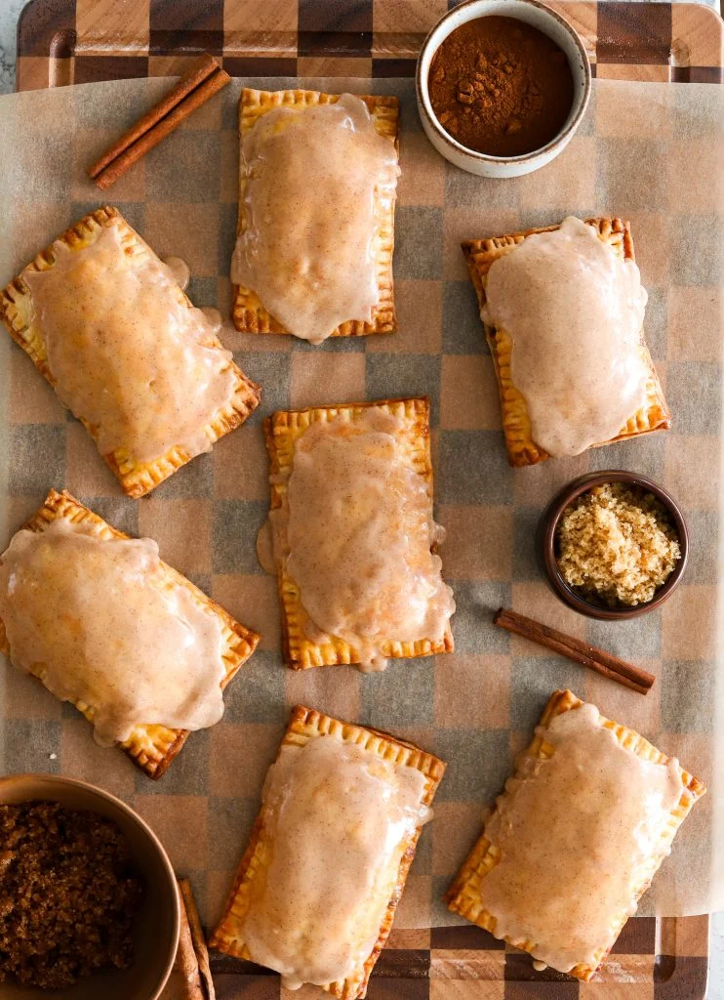
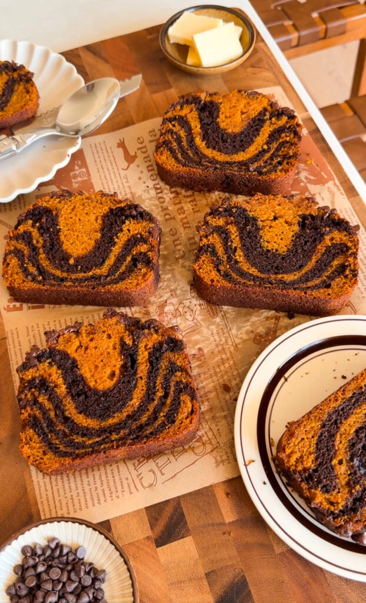
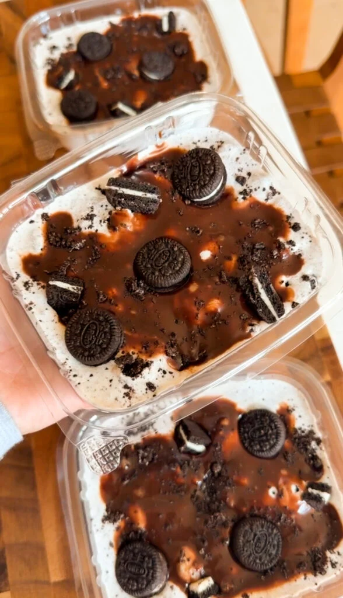
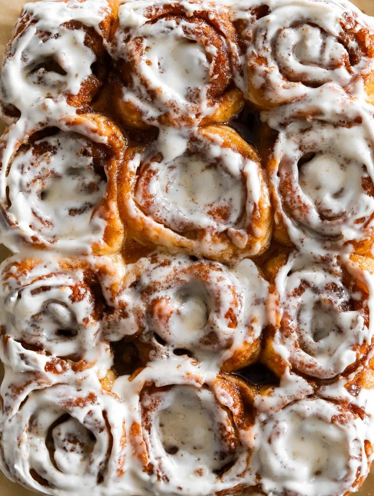

Pop-Tarts are one of those nostalgic treats that instantly take you back to childhood — that shiny foil wrapper, the sweet smell when you toasted them (or maybe you ate ' them straight up from the packet), and of course the gooey filling. But let’s be honest: the store-bought version is full of random ingredients and…
PREP TIME: 1 HOUR 30 MINUTES COOK TIME: 20 MINUTES
TOTAL TIME: 2 HOURS YIELDS: 8 POP TARTS

